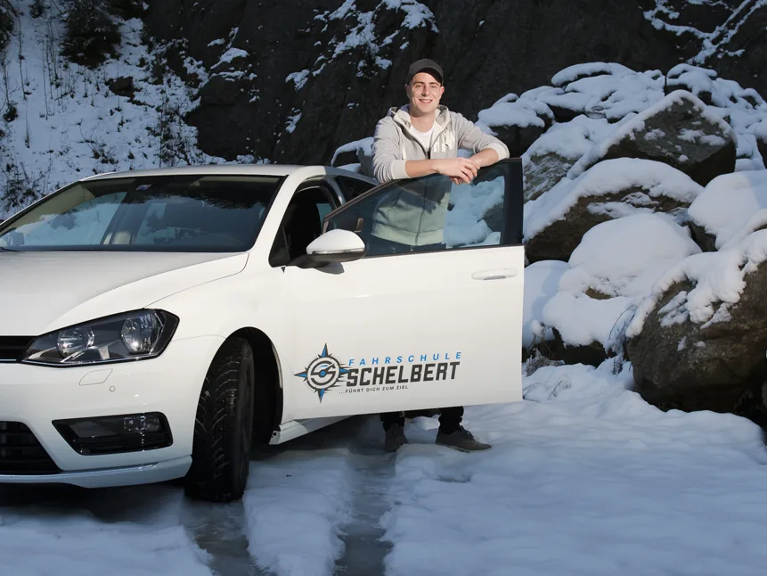
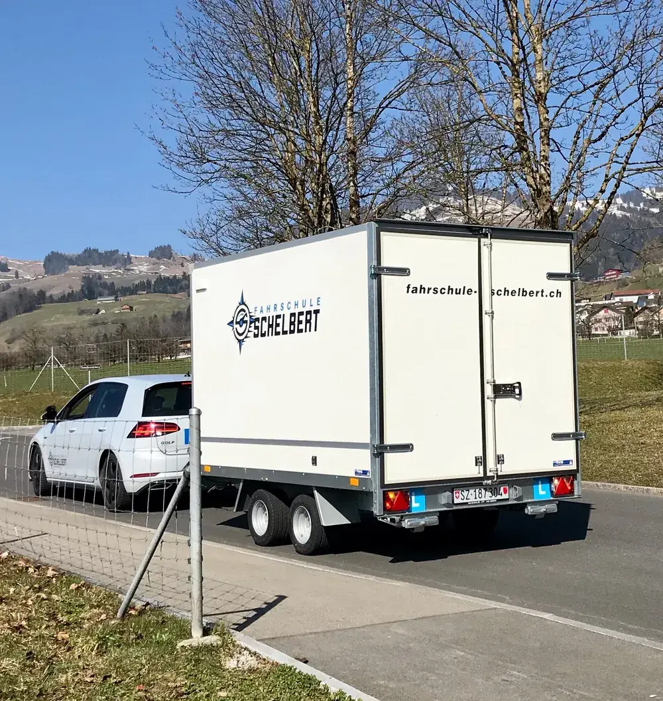
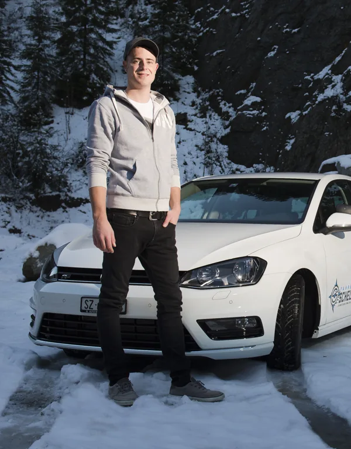

Fahrschule für Auto und Anhänger
Fahren lernen in Muotathal.
Dein Fahrlehrer Luca Schelbert begleitet dich vom Lernfahrausweis bis zur bestandenen Prüfung. Mit Automat oder Handschaltung, und auf Wunsch auch mit dem Anhänger.
Oder schreib mir auf WhatsApp
- Auto und AnhängerKategorie B und BE
- Automat oder HandschaltungSkoda Karoq oder VW Golf 8
- VKU in MuotathalIm Restaurant Alpenrösli
- Bar oder auf RechnungFür alle Angebote
Angebot
Was möchtest du lernen?
Fahrstunden für Auto und Anhänger, dazu der Verkehrskundeunterricht direkt im Dorf.
Auto
Vom Lernfahrausweis bis zur Prüfung. Du entscheidest, ob du mit Automat oder mit Handschaltung lernst.
- Fahrstunde à 50 Minuten
- Skoda Karoq oder VW Golf 8
Anhänger
Für Wohnwagen, Pferde- oder Gütertransport. Theorie, Kontrolle von Fahrzeug und Ladung, Fahren und Manövrieren.
- Lektion à 45 Minuten
- Start in Brunnen beim Muotaplatz
Verkehrskunde
8 Lektionen im Eventsaal «hindä ussä» im Restaurant Alpenrösli. Anmelden kannst du dich direkt online.
- Ab 2027 vor der Theorieprüfung
- CHF 50.– Gutschein für die Fahrausbildung
Erfolgsquote
Jedes Jahr über dem Kantonsschnitt
Bei den Führerprüfungen der Kategorie B liegt die Erfolgsquote von Luca Schelbert seit 2021 jedes Jahr über dem Durchschnitt im Kanton Schwyz. Das bestätigt das Verkehrsamt jedes Jahr mit einem Zertifikat.
| Jahr | Fahrschule Schelbert | Kanton Schwyz |
|---|---|---|
| 2025 | 80.9 % | 68.0 % |
| 2024 | 86.0 % | 68.9 % |
| 2023 | 75.0 % | 72.1 % |
| 2022 | 78.4 % | 68.5 % |
| 2021 | 81.6 % | 68.0 % |
Quelle: Zertifikate des Verkehrsamts des Kantons Schwyz, 2021 bis 2025
Weg zum Führerausweis
In 5 Schritten zum Führerausweis
- 1
Nothelferkurs
Der Nothilfeausweis ist 6 Jahre gültig.
- 2
Gesuch einreichen
Formular ausfüllen, Sehtest beim Optiker, bei der Gemeinde bestätigen lassen.
- 3
VKU und Theorie
Ab 2027 besuchst du den VKU vor der Theorieprüfung beim Verkehrsamt.
- 4
Fahrstunden
Mit dem Lernfahrausweis gehts los. Spätestens jetzt komme ich ins Spiel.
Prüfung und WAB
Nach der bestandenen Prüfung folgt noch der WAB-Kurs.

Fahrzeuge
Automat, Handschaltung oder mit Anhänger
Du lernst auf dem Skoda Karoq mit Automat oder auf dem VW Golf 8 mit Handschaltung. Für die Kategorie BE steht ein Anhänger mit Rückfahrkamera bereit.
- BAutomatSkoda Karoq Sportline
- BHandschaltungVW Golf 8 R-Line
- BEAnhängermit Rückfahrkamera
- BEÜber 750 kgoder Gesamtzug über 3.5 t
Preise
Transparent von Anfang an
Einmalig dazu kommen CHF 120.– für Administration und Versicherung, beim Anhänger CHF 100.– für die Versicherung. Bezahlen kannst du bar oder gegen Rechnung.
Fahrstunden verschenken
Machen Sie Ihrem Kind, Gottenkind, Enkel oder Freund eine Freude: mit einem Gutschein für Fahrstunden, im Wert von CHF 50.– bis 300.– oder einem Betrag nach Wahl.

Über mich
Dein Fahrlehrer: Luca Schelbert
Meine 14-monatige Ausbildung zum Fahrlehrer habe ich am Schweizerischen Verkehrspädagogischen Institut SVPI in Luzern gemacht und im Oktober 2016 abgeschlossen. Seit Frühling 2021 gebe ich auch Fahrstunden mit dem Anhänger.
Mit vollem Elan und grosser Freude habe ich schon viele Fahrschülerinnen und Fahrschüler auf ihrem Weg zum Führerausweis begleitet. Ich freue mich, auch dich zu unterstützen.
Bereit für deine erste Fahrstunde?
Ruf mich an oder schreib mir auf WhatsApp. Ich freue mich auf dich.